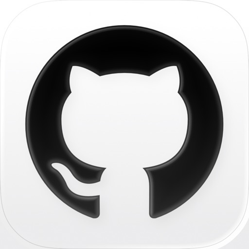

未設定だと GitHub API は 60 リクエスト/時（検索は 10/分）です。 読み取り専用の fine-grained PAT を設定すると 5,000/時 に増えます。 トークンはこのブラウザの localStorage にのみ保存され、公式 GitHub API 以外には送信しません （接続設定で明示的に許可した場合を除く）。
github.com に接続できない環境では、ミラー API や別 CDN を指定してください。 設定はこのブラウザにのみ保存されます。
プレースホルダ: {owner} {repo} {ref} {refEncoded} {path} {pathEncoded}
{owner}
{repo}
{ref}
{refEncoded}
{path}
{pathEncoded}